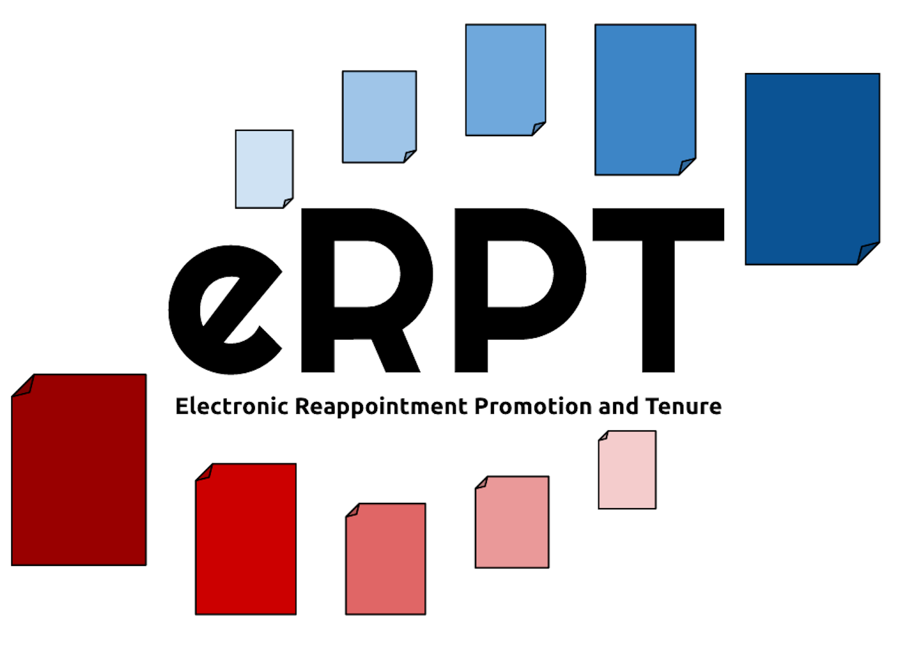

Welcome to Gonzaga University eRPT
Introduction
Welcome to Gonzaga University's electronic reappointment, promotion, and tenure application. This goal of this website is
to assist applicants and evaluators with the RPT process by simplifying binder creation and eliminating paper waste. This
website was designed by a group of senior computer science students as part of their capstone project for the year of 2015-16,
with hopes to assist Gonzaga University in bettering the RPT process.